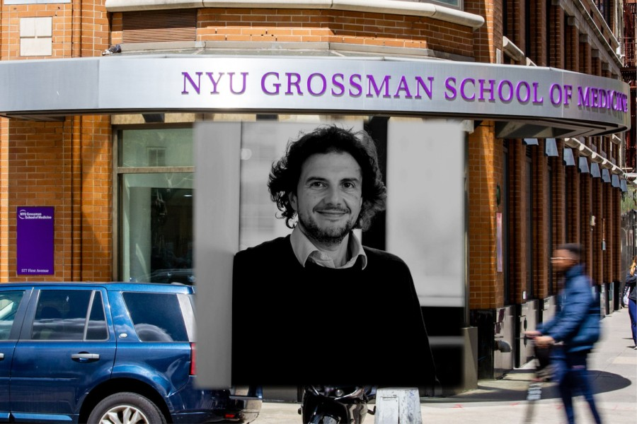
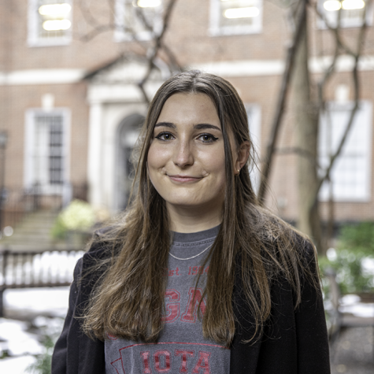

David Sabatini will not be hired by NYU
The former tenured MIT professor, who was forced out of three institutions following allegations of sexual misconduct, will no longer be considered for employment by NYU’s medical school.
By Abby Wilson, News Editor
May 3, 2022
David Sabatini will not be joining the NYU Grossman School of Medicine faculty, according to a spokesperson and the Grossman administration.
In an email to the NYU Grossman School of Medicine community Tuesday morning, administrators announced that the former tenured Massachusetts Institute of Technology professor — who was forced out of three institutions due to allegations of sexual misconduct — is no longer being considered for employment by the school.
David Sabatini has withdrawn his name from consideration for employment at the NYU Grossman School of Medicine. (Image via MIT, Staff Photo by Manasa Gudavalli)
“After careful and thorough consideration that included the perspectives of many stakeholders, both Dr. David Sabatini and NYU Grossman School of Medicine have reached the conclusion that it will not be possible for him to become a member of our faculty,” reads the email, which was co-signed by Grossman executive vice president Dafna Bar-Sagi and the school’s dean and CEO Robert Grossman.
The same announcement was shared by Grossman’s Twitter account about 20 minutes later. The school said after careful consideration and the inclusion of many opinions — both from Sabatini’s former colleagues and students and from the NYU community — administrators had decided not to move forward with his hiring.
[Click here to subscribe to WSN’s newsletter and get our top stories in your inbox.]
According to a Sabatini spokesperson, the scientist said he decided to withdraw his name due to the pressure it has placed on NYU Langone Health and its values. He called the allegations made against him by the press and in social media “false, distorted and preposterous.”
“I deeply respect NYU Langone Health’s mission and appreciate the support from individuals who took the time to learn the facts,” he wrote. “I remain steadfast in believing that the truth will ultimately emerge and that I will eventually be vindicated and able to return to my research.”
Sabatini’s potential recruitment had caused an uproar among Grossman students, faculty and employees. NYU president Andrew Hamilton had previously strongly advised against his hiring. Many students and staff signed a letter condemning his continued consideration and pledging to not attend NYU events, give lectures, or teach courses at the school or work with NYU Langone Health labs, experiments, facilities and projects until hiring conversations came to an end.
[Read more: NYU Grossman admins defend potential Sabatini hiring, dispute allegations]
Hundreds of Langone students and staff walked out of the medical school on April 27 to protest the continued consideration of Sabatini’s hiring. Bar-Sagi and Langone general counsel Annette Johnson held a restricted access town hall the next day, in which they praised the scientist’s research accomplishments and refuted allegations made against him. Johnson claimed that MIT’s investigation into his behavior was unfairly conducted and said that sexual misconduct claims against him had been unfounded.
Contact Abby Wilson at awilson@nyunews.com.
About the Contributor
Abby Wilson is a junior studying journalism and English. She’s from a Chicago suburb and more mid-western than she’d like to admit. In her free time,...
TRENDING
David Sabatini will not be hired by NYU
NYU Grossman admins defend potential Sabatini hiring,
Rubin Hall intruder’s identity revealed in police report
New York cannot be the city of your dreams
‘I need to get out’: NYU Shanghai lockdown leaves students
© 2022 Washington Square News. All rights reserved. 75 Third Ave. #SB07, New York, NY 10003 • FLEX Pro WordPress Theme by SNO • Log in